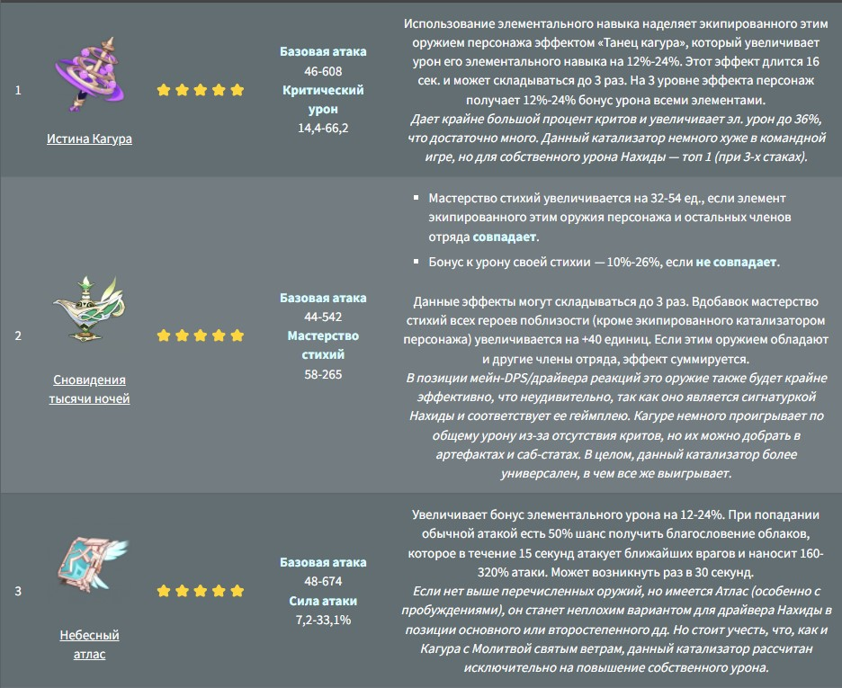

Нахида, Дендро-Архонт мудрости Сумеру – 5 ⭐ персонаж с оружием типа катализатор. Малая властительница Кусанали мудра, добра и очень любит людей. Хотя ее почти никогда не упоминают и не воспринимают всерьез, Нахида во что бы то ни стало стремится стать квалифицированным божеством и возглавить свой народ.
Оружие Нахиды, в первую очередь, должно соотвествовать следующим параметрам: иметь бонусы к мастерству стихий и элементальному урону. Это основные показатели, которые вляют на дамаг персонажа при любой сборке.
В реакциях с Электро или в позиции основного дд, хорошо зайдут катализаторы на криты/силу атаки. Однако мастерство стихий по-прежнему является важным статом, поэтому необходимо соблюдать баланс между МС и другими статами для увеличения собственного урона Нахиды. Среди катализаторов рекомендуем следующие:
Билд предполагает, что Нахида является Дендро поддержкой и собирается полностью через мастерство стихий. Это позволит максимизировать данную характеристику, а значит эффективнее проводить реакции и получать повышенный урон от Очищения трикармы (элементальный навык). Среди катализаторов выделим следующие: